區塊(地圖)
albion作為一個開放世界遊戲，區塊間以各式各樣的傳送門互相連結。本篇會說明區塊(地圖)的詳細分類。
區域
大地圖當中的任意地區，位於階級和地圖名之間，或是小地圖放大後的左上角，可以得知區域類型。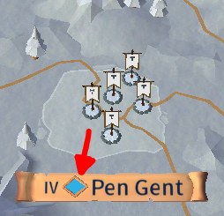 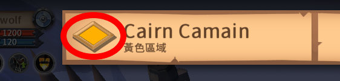
| 區域 | 右下小地圖 | 人數提示 | PvP |
| 藍區 (T3~T4) |
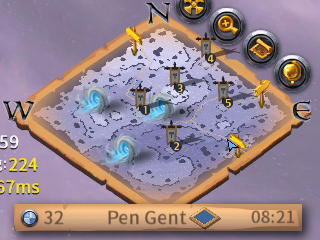 | 友好玩家的個數 (未開紅) |
能主動開紅但無法攻擊其他人 陣營PvP血量歸零後會被傳送至附近的哨站 |
| 黃區 (T5) |
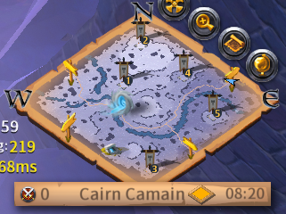 | 開紅玩家的個數 |
能主動開紅打人(無法攻擊掛陣營旗的人) PvP血量歸零僅會倒地不會死亡 陣營PvP血量歸零後會被傳送至附近的哨站 |
| 紅區 (T6~T7) 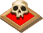 |
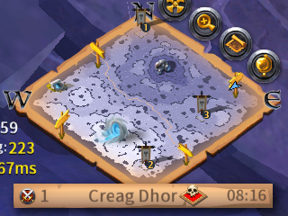 | 開紅玩家的個數 |
能主動開紅攻擊任何人(包括陣營和開紅的人) PvP血量歸零會死亡 死亡後，身上和背包的東西全數噴光 (金幣、銀幣、不可交易物品不會噴) |
| 黑區 (T4~T8) |
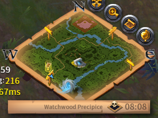 | 無 (黑區不會顯示) |
只要進黑區就會被動開紅，能攻擊任何人 PvP血量歸零會死亡 死亡後，身上和背包的東西全數噴光 (金幣、銀幣、不可交易物品不會噴) |
階級
如何得知地圖的階級：
| 開放世界(皇家大陸、異域) 、固定地下城 |
按[M]打開大地圖，找到你所在的地圖： 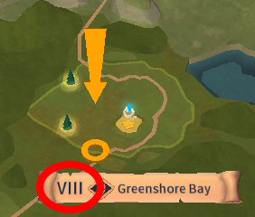 VIII即為該地圖的階級(T8)。 |
| 阿瓦隆 |
假如你處於阿瓦隆內，阿瓦隆傳送門地板上的金屬環會提示你，門後面那張圖的資訊。 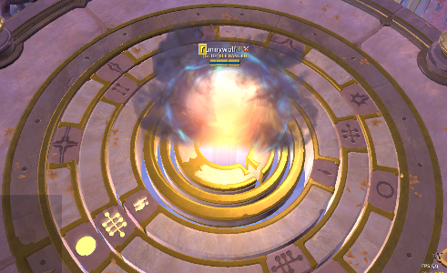 符號意義請見阿瓦隆之路#金屬環符號。 |
| 迷霧 | 請參照通用方法。 |
| 隨機地下城(綠、藍、金洞) | 請參照通用方法。 |
通用方法：
選取怪物(資源怪除外)，左上角會出現怪物的資料。
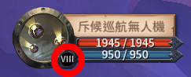
VIII即為該地圖的階級(T8)。
階級對照表：
| 羅馬數字 | 階級(Tier) |
| I | T1 |
| II | T2 |
| III | T3 |
| IV | T4 |
| V | T5 |
| VI | T6 |
| VII | T7 |
| VIII | T8 |
生態系
下表僅適用於開放世界(皇家大陸、異域)
| 生態系 | 圖片 | 資源種類(生成量由多到少排序) |
| 雪地 | 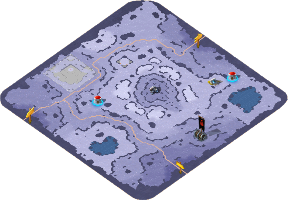 | 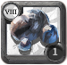 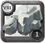 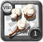 |
| 森林 | 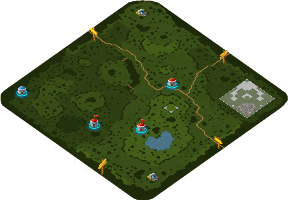 | 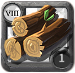 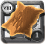 |
| 沙漠 | 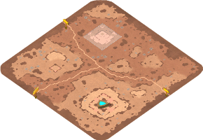 | |
| 高地 | 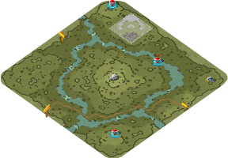 | |
| 沼澤 | 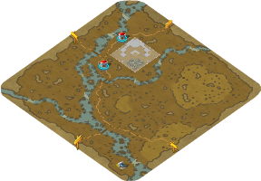 |
- 阿瓦隆內不會提示生成的資源。
- 迷霧內則是五種資源都會生成。
編輯紀錄
作者: runnywolf
最後編輯日期: 2023/03/12